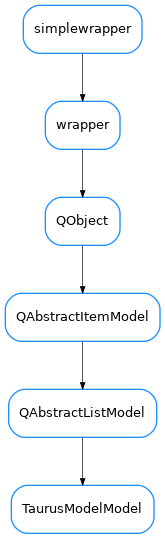

TaurusModelModel¶

-
class
TaurusModelModel(items=None)[source]¶ Bases:
PyQt5.QtCore.QAbstractListModelA Qt data model for describing taurus models
-
addItem(item)[source]¶ appends an item to the internal list
- Parameters
item (
TaurusModelItem) –
-
insertItems(row, items)[source]¶ convenience method to add new rows by passing a list of strings ()
- Parameters
row (
int) – the row of the list at which the item insertion starts, if row==-1, items will be appended to the listitems (
seq) – a sequence items to add to the list. The objects in the sequence can be either strings,TaurusModelItemobjects or tuples of valid arguments for initializingTaurusModelItemobjects
-